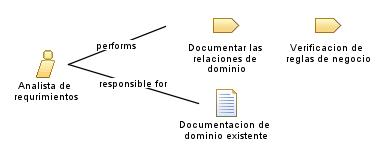

| Role: Analista de requrimientos |
 |
|
Relationships
 |
||
| Primary Performs | ||
|---|---|---|
| Additionally Performs | ||
| Modifies |
|
|
Main Description
|
Trabaja en colaboración con los interesados, como los contadores, los administradores y los usuarios finales, para identificar y documentar los requisitos funcionales, como la generación de facturas, el seguimiento de pagos y la generación de informes financieros. También se encarga de recopilar los requisitos no funcionales, como la seguridad de los datos y la escalabilidad del sistema, asegurándose de que los requerimientos estén correctamente definidos y sean coherentes con los objetivos del negocio. |
Staffing
| Skills | Resolución de problemas, analisis, observación, habilidades de organización y modelado |
|---|---|
| Synonyms | Analista Funcional |